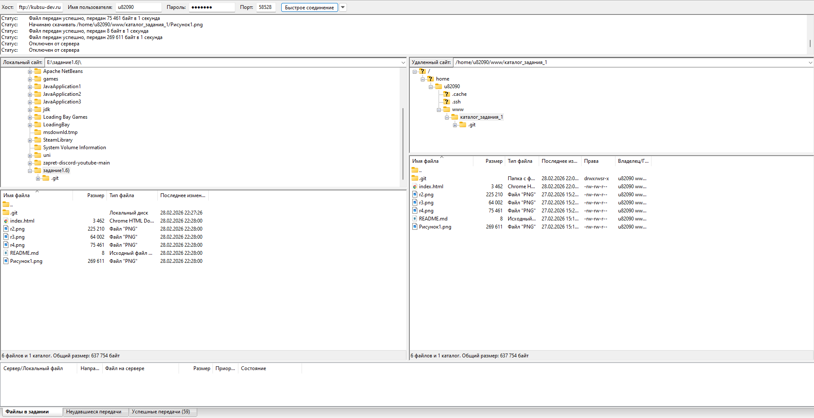

- С помощью команды ping на учебном сервере узнать IP-адрес веб-сервера kubsu.ru.
Команда ping используется для проверки доступности узла в сети и качества соединения с ним. Процесс продолжается до тех порпока вы не остановите его командой Ctrl + C.

- С помощью команды nslookup узнать A-записи и MX-записи домена kubsu.ru и kubsu-dev.ru.
Она отправляет запросы к DNS-серверам, чтобы узнать IP-адрес по доменному имени или наоборотдомен по IP-адресу.

- С помощью команды whois узнать дату регистрации домена kubsu.ru и kubsu-dev.ru.
Команда whois в консоли сервера — это сетевой инструмент для получения регистрационных данных о доменных именах, IP-адресах и автономных системах.

- C помощью SSH склонировать репозитарий со скриншотами и страницей в каталог www.
- С помощью программы FileZilla или любого другого клиента SFTP соединиться с учебным сервером с вашим логином и паролем по протоколу SFTP и скопировать на локальный компьютер файлы задания из каталога www.
